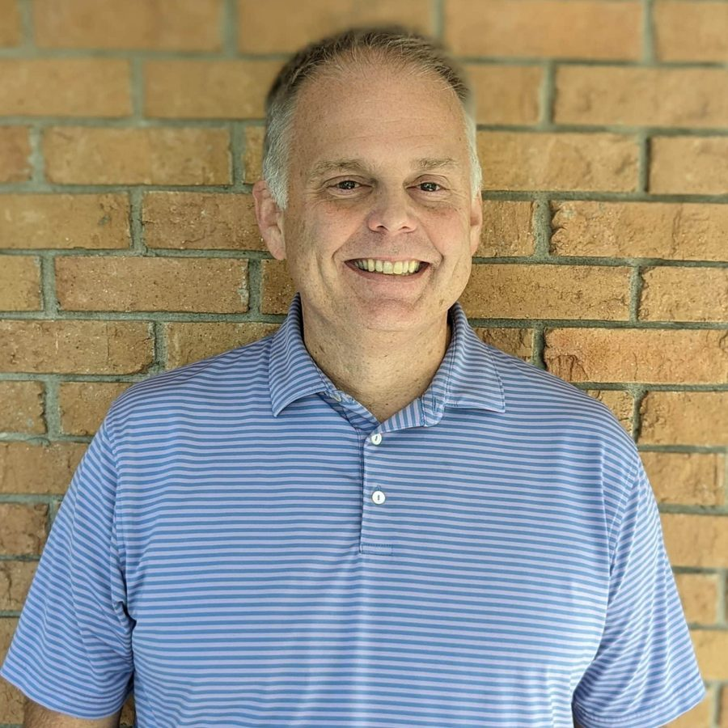

Elder
David Cleland
David was born and raised in Savannah. He attended Calvary Day School and Jenkins High School. He graduated from Georgia State University and The Master's Seminary. He's been in full-time ministry for almost twenty years in churches in California, Illinois, and Georgia. He is married to Erika and they have five children: Lucy, Harry, Archie, Gus and Walt. David is passionate about the power of Jesus Christ to change lives and adoption. In his spare time he likes to play golf and travel.